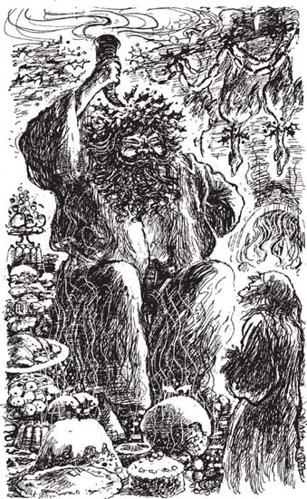

9
Listen to Part 1:

Bóng ma Quà tặng hiện tại
Khi Scrooge tỉnh lại lần nữa, đã tối rồi. Ông biết bóng ma kế tiếp sẽ sớm đến thăm.
Liệu bóng ma đó trông thế nào nhỉ? Scrooge đã sẵn sàng đón đợi bóng ma tiếp theo. Ông chẳng lo lắng bóng ma đó trông như đứa trẻ hay con voi gì.
Tiếng chuông nhà thờ đổ một hồi. Đã một giờ rồi. Scrooge rụt rè kéo bức màn quanh giường và chờ đợi. Có một luồng sáng đỏ rực xung quanh giường ông, nhưng bóng ma thì không thấy đâu.
Năm phút trôi qua. Mười phút. Mười lăm phút. Scrooge nằm trên giường, trong lòng sợ đến phát run. Cuối cùng, ông phát hiện luồng sáng lạ thường đó đang phát ra từ dưới cánh cửa căn phòng bên. Ông xuống giường và từ từ tiến về phía cánh cửa.
Đột nhiên có một giọng nói lớn gọi tên ông. 'Vào đi, Ebenezer Scrooge. Vào đi.'
Scrooge mở cánh cửa và nhìn vào trong. Đúng vậy, đó là phòng ông. Nhưng mọi thứ đã thay đổi nhiều lắm, khác hoàn toàn rồi.
Cành cây treo ở khắp mọi nơi. Tất cả các cành cây đều phủ đầy lá cây xanh tươi và quả mọng đỏ nho nhỏ. Có một đống lửa bùng cháy thật to với những ngọn lửa vàng tươi bập bùng. Đó là ngọn lửa lớn nhất mà Scrooge từng nhìn thấy trong căn phòng này. Và thức ăn! Thật nhiều thức ăn! Có gà tây và ngỗng. Có trái cây. Có bánh nướng và bánh pudding. Có toàn là những món đồ ngon thường dùng trong bữa tiệc Giáng sinh.
Giữa căn phòng là một người đàn ông cao lớn đang tươi cười. Ông ta đang cầm một ngọn đuốc lớn. Ngọn đuốc trông giống như chiếc sừng của con vật nào đó. Một ngọn lửa nhỏ màu đỏ tươi đang cháy ở ngọn đuốc. Đây chính là luồng sáng mà Scrooge nhìn thấy.
Người đàn ông cao lớn đó đã hét lên: 'Vào đây đi.' Ông ta có chất giọng rất tử tế và biểu cảm dịu dàng. Nhưng Scrooge không muốn nhìn mặt ông ta.
Listen to Part 2:
Người đàn ông cao lớn ấy nói với Scrooge: 'Tôi là Bóng ma Quà tặng hiện tại. Hãy nhìn mặt tôi này.'
Scrooge nhìn kĩ và thấy bóng ma đó mặc chiếc áo choàng xanh lục và trắng dài. Bóng ma để tóc dài màu nâu. Phía trên đỉnh đầu ông ta có gắn những chiếc lá tầm gửi. Lá tầm gửi còn dính cả các cục băng.
Bóng ma đó hỏi: 'Trên đời này, ông đã từng gặp ai như tôi chưa?'
'Không. Chưa từng bao giờ', Scrooge trả lời.
Bóng ma đứng lên. Scrooge liền nói: 'Ông hãy dẫn tôi đi. Đêm qua, tôi đã thấy rất nhiều chuyện xảy ra trong cuộc sống quá khứ. Tôi đã học được nhiều điều. Tối nay, tôi muốn ra ngoài và khám phá tiếp. Tôi muốn học cách để sống một cuộc đời tốt đẹp hơn.'

Giữa căn phòng là một người đàn ông cao lớn đang tươi cười. Ông ta đang cầm một ngọn đuốc lớn.
Bóng ma Quà tặng hiện tại nói: 'Hãy túm lấy áo choàng của tôi.
Scrooge túm lấy chiếc áo choàng xanh lục và trắng và đột nhiên cả căn phòng biến mất. Họ đang đứng trên một con phố đông đúc của thành phố London vào lúc sáng sớm. Tuyết phủ khắp mặt đất và mọi nơi đông nghịt người qua lại. Sáng ngày Giáng sinh trời đẹp có nắng. Tiếng chuông nhà thờ ngân vang và mọi người bắt đầu ra khỏi nhà thờ. Họ trở về nhà để cùng ăn tối trong đêm Giáng sinh.
Những người khác thì xách theo giỏ đi trên đường. Trong mỗi giỏ đều đựng gà tây hoặc ngỗng. Những người dân nghèo không nấu nướng bữa tối Giáng sinh trong nhà mình được vì họ không có lò nướng. Họ phải mang theo con ngỗng hoặc gà tây để các tiệm làm bánh nướng nướng cho. Vào ngày Giáng sinh, lò làm bánh sẽ không nướng bánh mì mà họ dành thời gian nướng thức ăn Giáng sinh cho những người dân nghèo trong những chiếc lò lớn của mình.
Listen to Part 3:
Hầu hết những người này đều vui vẻ. Khi Bóng ma Quà tặng hiện tại nhìn thấy ai buồn bã hoặc cáu kỉnh, ông lại dừng chân. Ông ta phe phẩy ngọn đuốc trên đầu họ. Những ngọn lửa đỏ thẫm chiếu vào người họ. Khi đó, những người này liền mỉm cười và cũng cười vui vẻ.
Scrooge vô cùng hài lòng. Bóng ma mong muốn mang lại hạnh phúc cho những người dân nghèo.
Mục lục
- trang tiêu đề
- mục lục
- ghi chú về tác giả
- ghi chú về cuộc sống ở anh vào thế kỷ 19
- 1 Ebenezer Scrooge
- 2 những vị khách đến thăm Scrooge
- 3 hồn ma của Marley
- 4 tin tức cho Scrooge
- 5 hồn ma của những lễ Giáng Sinh đã qua
- 6 Scrooge thời thơ ấu
- 7 Giáng Sinh cùng gia đình Fezziwigs
- 8 cô gái yêu Scrooge
- 9 hồn ma của lễ Giáng Sinh hiện tại
- 10 Giáng Sinh cùng gia đình Cratchits
- 11 một lễ Giáng Sinh vui vẻ ở khắp mọi nơi
- 12 hồn ma của lễ Giáng Sinh sắp tới
- 13 Tiny Tim
- 14 một người đàn ông đã thay đổi
- ý chính cần hiểu
- trang bản quyền